呼吸照護：跨越呼吸道、肺臟與心臟的挑戰
原標題：Respiratory Care in Dogs and Cats: Challenging Conditions across the Airways, Lungs, and Heart
主講：林中惠 Joan Chung-Hui Lin DVM, MVM, PhD, DAiCVIM, FASE（TACS-Alliance Research Center／國立臺灣大學）｜2026-11-02｜FASAVA 2026｜場次 13
尚無錄音；之後有 Plaud 逐字稿可再合併成 🎤。藥物劑量照講義抄錄，使用前請再核對。
⭐ 本場重點
- 每一次呼吸都是心血管事件：胸腔內壓、肺容積／肺血管阻力、心室互相依存，三條路把呼吸和心臟綁在一起
- 心因性肺水腫：正壓（PEEP/CPAP）降低左心室跨壁壓 → 降低後負荷；犬 helmet CPAP 研究：給氧時間 5.4 vs 14 h、利尿劑用量少約四成
- 呼吸道用藥會傷心（β2 促效劑、茶鹼類）；噴霧也有鈉負荷，4 kg CHF 犬每天吞 10 mL 7% 食鹽水就超標 2.3 倍——Less is more
- NCPE 不是一種病：依機轉治療，利尿劑不是常規答案
- 四個「被忽略、可預防」的心肺傷害：貓 HARD（不需成蟲）、KBr 支氣管炎（貓別用）、礦物油脂質肺炎（永遠不要口服）、Minoxidil／落建中毒（貓致死）
- 支氣管軟化（BM）不是「只會咳」：中位存活 998 天、64% 死於心肺原因；肺高壓是關鍵共病，要持續追蹤（PRIME score）
- ILD：間質紋 ≠ ILD ≠ 纖維化；不同病程 → 不同治療目標，要趁纖維化前找出可治療的原因
- 病例：夜間反覆咯血＋紅血球暫時升高的西施犬 → 推測交感失調，prazosin（α1 阻斷）後 23 個月無再發
場次資訊與大綱
▾摘要與大綱（1–2）
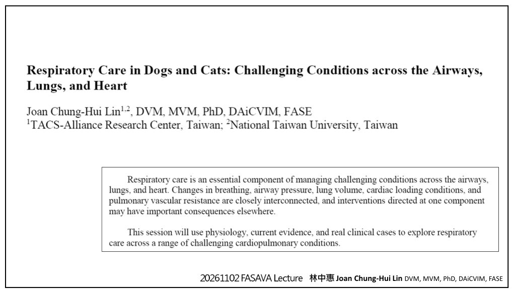
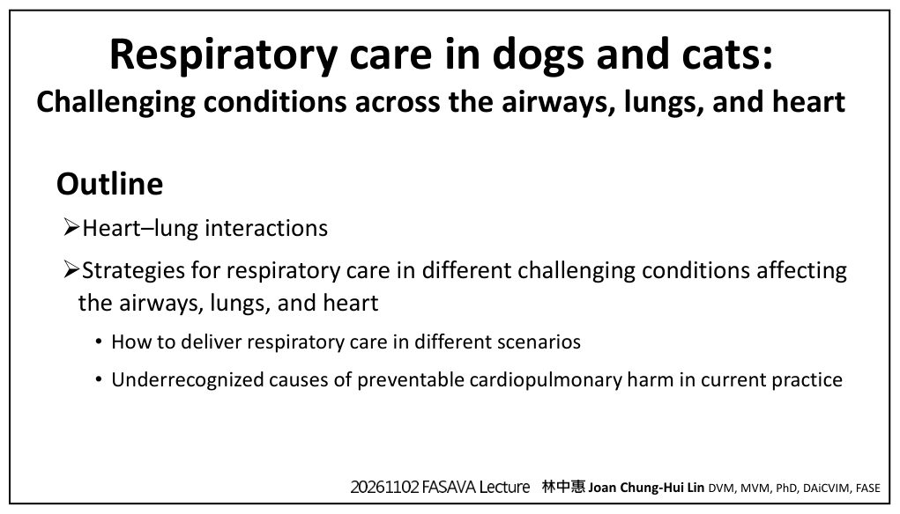
💡 講者摘要大意：呼吸照護是處理呼吸道、肺臟、心臟疾病的核心。呼吸方式、氣道壓力、肺容積、心臟負荷、肺血管阻力彼此牽連，對其中一個環節的介入，可能在別處造成重要後果。這場用生理學、最新證據和真實病例來談。
- 心肺交互作用（Heart–lung interactions）
- 各種困難情境下的呼吸照護策略：① 不同情境怎麼給呼吸支持；② 目前臨床上被低估、但可預防的心肺傷害
1. 心肺交互作用：每一次呼吸都是心血管事件
▾呼吸改變心臟負荷（3–5）
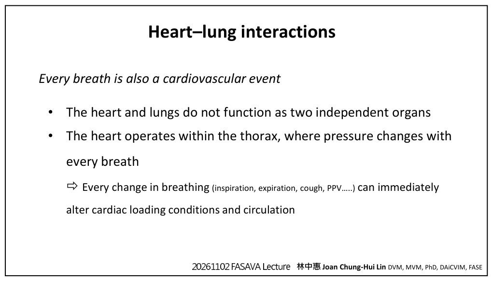
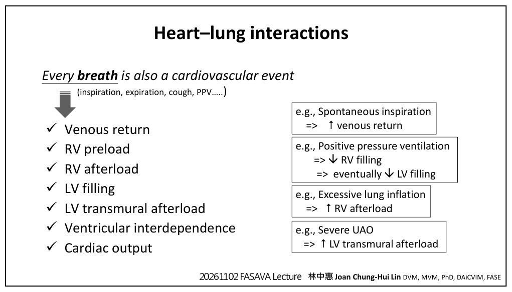
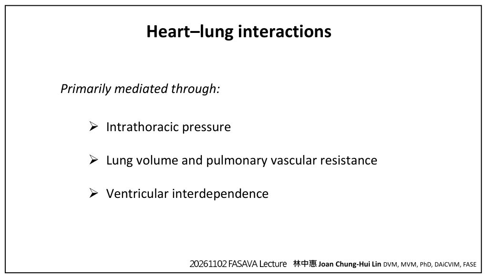
💡 心臟關在胸腔裡，胸腔壓力隨每次呼吸改變，所以吸氣、吐氣、咳嗽、正壓通氣（PPV）都會立刻改變心臟的前、後負荷。講義的四個例子：
| 情境 | 結果 | 💡 白話 |
|---|---|---|
| 自主吸氣 | ↑ 靜脈回流 | 胸腔變負壓，把血「吸」回右心 |
| 正壓通氣 | ↓ 右心充填 → 最後 ↓ 左心充填 | 胸腔變正壓，壓住大靜脈，回流變少 |
| 肺過度膨脹 | ↑ 右心後負荷 | 肺泡撐太開，壓扁肺泡旁微血管，肺血管阻力上升 |
| 嚴重上呼吸道阻塞（UAO） | ↑ 左心室跨壁後負荷 | 用力吸氣造成極大負壓，左心室要更用力才能把血打出去 |
💡 三條主要途徑：胸腔內壓、肺容積與肺血管阻力、心室互相依存（左右心室共用中膈和心包膜，一邊撐大就會擠壓另一邊）。
跨壁壓：同樣 120 mmHg，負擔不一樣（6–8）
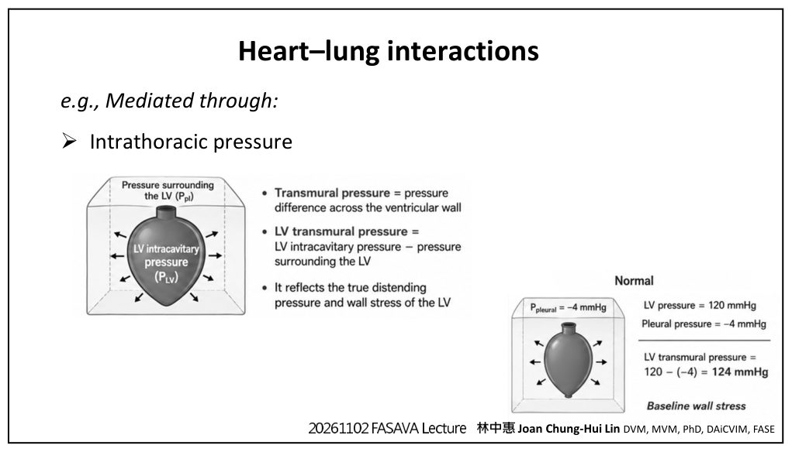
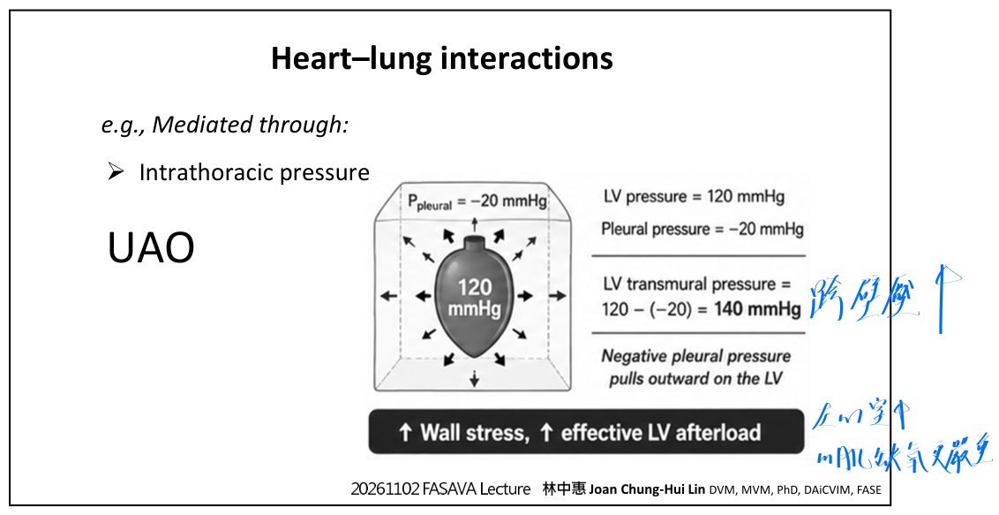
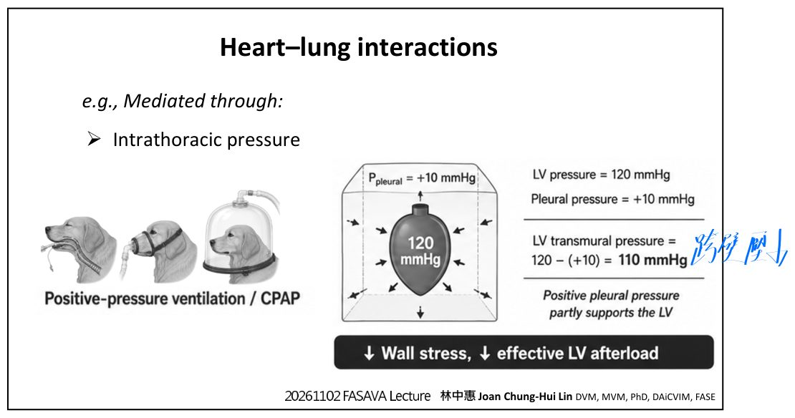
💡 跨壁壓 = 左心室腔內壓 − 心臟外面（胸膜腔）的壓力，才是心肌真正感受到的撐開力量與壁張力。左心室腔內壓都是 120 mmHg：
| 情境 | 胸膜壓 | 跨壁壓 | 後負荷 |
|---|---|---|---|
| 正常 | −4 | 124 | 基準 |
| 上呼吸道阻塞 | −20 | 140 | ↑ 壁張力、↑ 有效後負荷（負壓把左心室往外拉） |
| 正壓通氣／CPAP | +10 | 110 | ↓ 壁張力、↓ 有效後負荷（正壓幫忙「托住」左心室） |
✍️ 筆記 UAO：跨壁壓 ↑。PPV：跨壁壓 ↓。
💡 臨床連結：喉麻痺、短吻犬呼吸道症候群的狗嚴重吸氣困難時，除了缺氧，也在加重左心負擔；這也是阻塞性呼吸困難可能併發「負壓性肺水腫」的原因（見第 4 節）。
2. 心因性肺水腫（CPE）與 PEEP／CPAP
▾CPE vs NCPE（9）
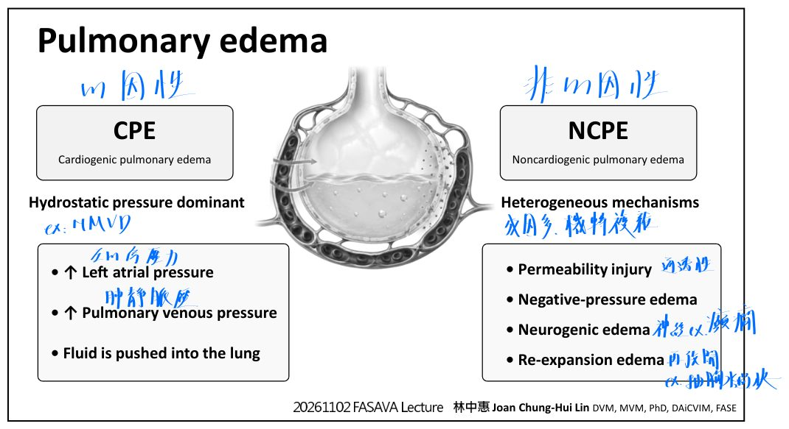
CPE 心因性（例：MMVD）
- 靜水壓為主
- ↑ 左心房壓 → ↑ 肺靜脈壓
- 液體被「推」進肺
NCPE 非心因性
- 機轉多樣
- 通透性傷害、負壓性、神經性（例：癲癇）、復張性（例：抽完胸水後肺快速擴張）
✍️ 筆記 CPE＝心因性，ex. MMVD；左心房壓力、肺靜脈壓。NCPE＝非心因性，成因多、機轉複雜；通透性、神經性 ex. 癲癇、肺擴張 ex. 抽胸水後。
標準治療＋呼吸照護（10–12）
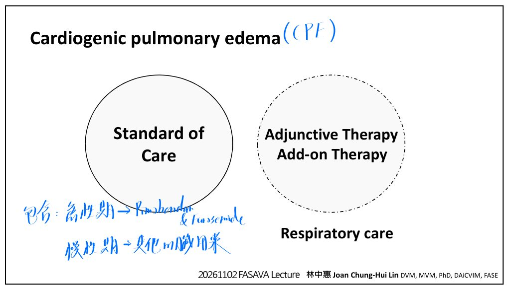
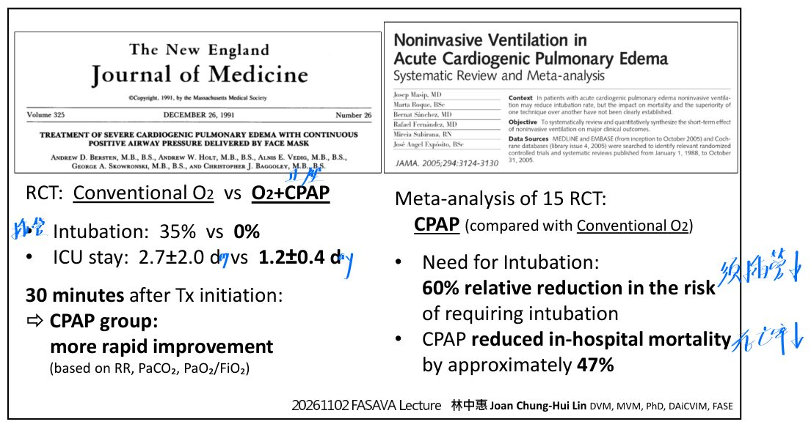
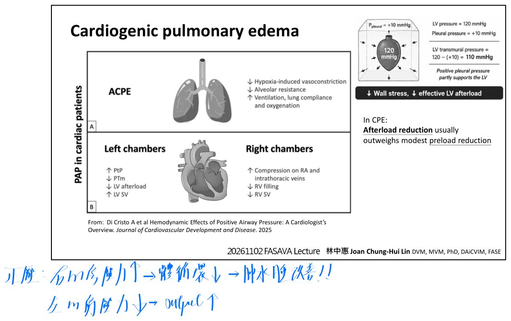
✍️ 筆記 標準治療：急性期 → pimobendan & furosemide；慢性期 → 長期口服用藥 ❔。
💡 講者把呼吸照護定位成標準治療之外的輔助治療，不是取代利尿劑。人醫證據：
- NEJM 1991 RCT（面罩 CPAP vs 一般給氧）：插管率 35% vs 0%；ICU 天數 2.7 vs 1.2 天；治療 30 分鐘後 CPAP 組呼吸速率、PaCO₂、PaO₂/FiO₂ 改善較快。
- JAMA 2005 統合分析（15 篇 RCT）：CPAP 讓插管風險相對下降 60%、院內死亡率下降約 47%。
✍️ 筆記 插管、天數、減少插管、死亡率 ↓。
💡 第 12 張（Di Cristo 2025）：正壓對肺（↓ 缺氧性血管收縮、↓ 肺泡阻力、↑ 通氣與順應性）和左心（↓ 跨壁壓、↓ 後負荷）有利；對右心則是壓迫右心房與胸內靜脈 → ↓ 右心充填、↓ 右心搏出量。CPE 時，降後負荷的好處通常大過降前負荷的壞處（而 CPE 病患前負荷本來就太多，少一點反而好）。
✍️ 筆記 小結：左心房壓力 ↑ → 靜脈回流 ↓ → 肺水腫改善!!；左心室壓力 ↓ → output ↑。
給 PEEP／CPAP 的方式（13–14）
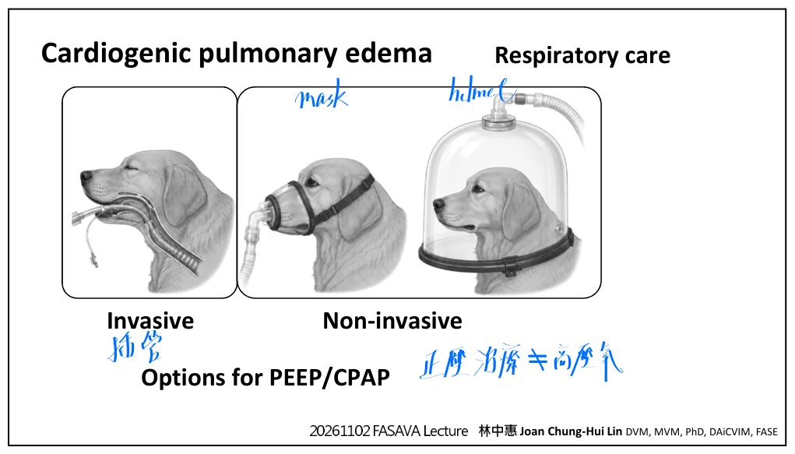
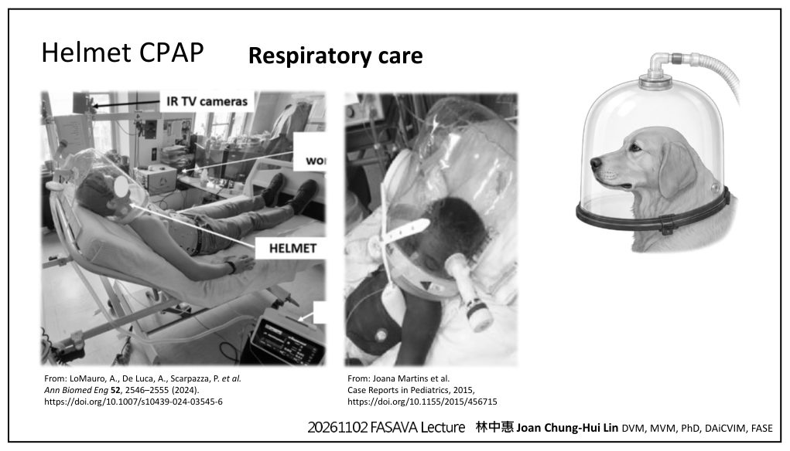
✍️ 筆記 侵入性＝插管；非侵入性＝mask、helmet。正壓 ❔。
💡 Helmet（頭罩）CPAP 是一個透明頭罩，頸部用軟環密封，持續送入高流量氣體，出口接 PEEP 閥維持正壓。好處是不用插管、不用鎮靜，狗通常比緊貼口鼻的面罩容易接受。
犬 helmet CPAP 研究（JAVMA 2023）（15–19）
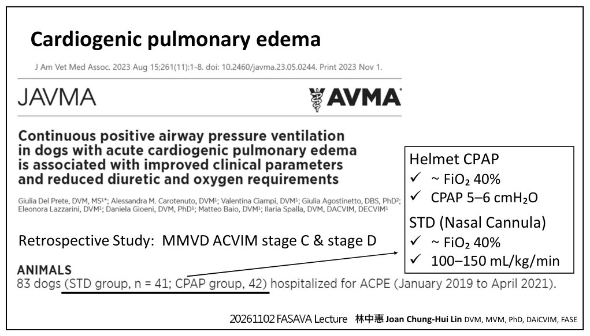
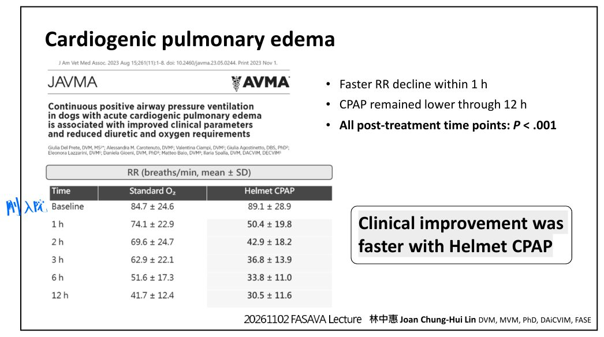
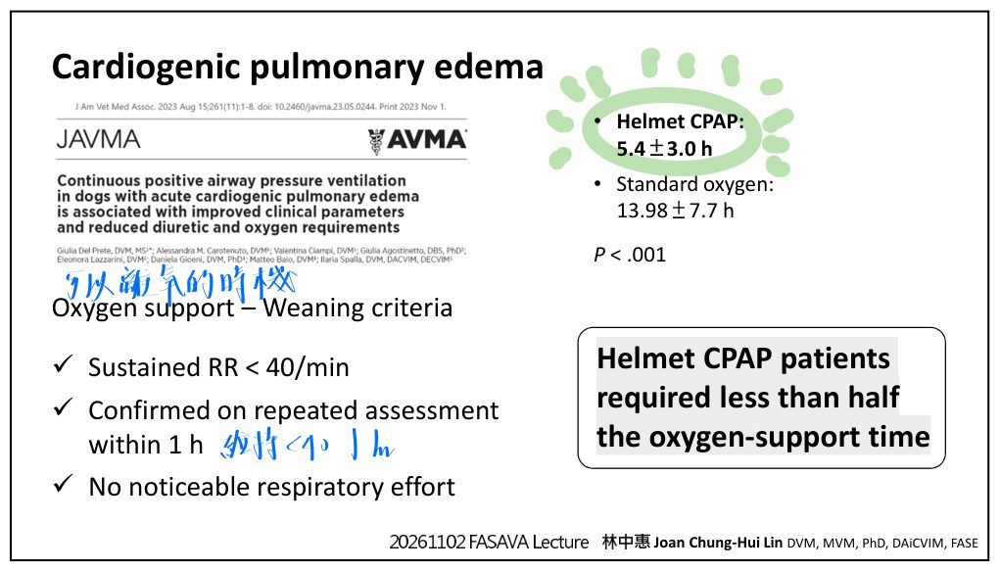
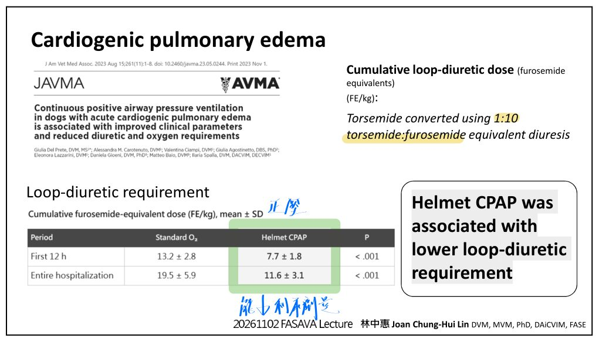
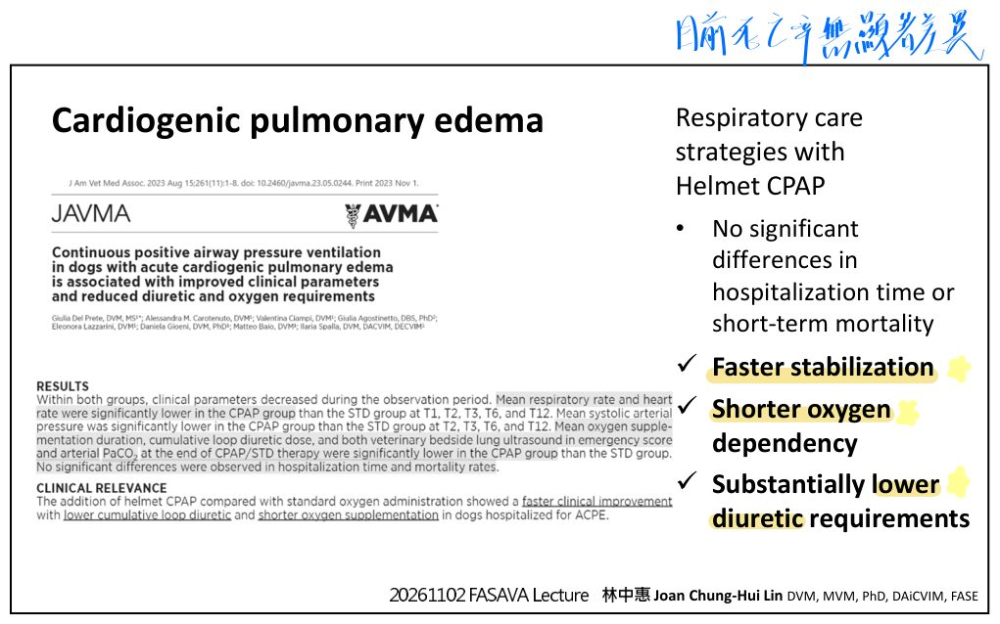
| Helmet CPAP（n=42） | 標準組：鼻導管（n=41） | |
|---|---|---|
| 設定 | FiO₂ ~40%、CPAP 5–6 cmH₂O | FiO₂ ~40%、100–150 mL/kg/min |
| 呼吸速率 1 h（次/分） | 50.4（入院 89.1） | 74.1（入院 84.7） |
| 呼吸速率 12 h | 30.5 | 41.7 |
| 給氧時間 | 5.4 ± 3.0 h | 13.98 ± 7.7 h |
| 前 12 h 累積 furosemide 當量 | 7.7 ± 1.8 mg/kg | 13.2 ± 2.8 mg/kg |
| 整個住院累積 | 11.6 ± 3.1 mg/kg | 19.5 ± 5.9 mg/kg |
| 住院天數、短期死亡率 | 兩組無顯著差異 | |
- 族群：ACVIM C／D 期 MMVD、因急性心因性肺水腫住院的 83 隻犬（2019/1–2021/4，回溯性）。
- 脫離氧氣標準：呼吸速率持續 < 40 次/分、1 小時內重複確認、沒有明顯呼吸費力。
- Torsemide 用 1:10 換算成 furosemide 當量（torsemide 1 mg ≈ furosemide 10 mg 的利尿效果）。
✍️ 筆記 RR 剛入院；以前給氧的時間；很快 <1 h；目前看不到（住院／死亡率的）顯著差異；利尿劑用量降低。
💡 白話結論：加上 helmet CPAP，狗穩定得更快、更早脫離氧氣、利尿劑少用約四成。利尿劑少用的意義是腎前性氮血症、電解質失衡、脫水的風險較低——但存活沒有因此改變，而且是回溯研究，分組不是隨機的。
PEEP 能讓胸膜壓升多少？（20–24）
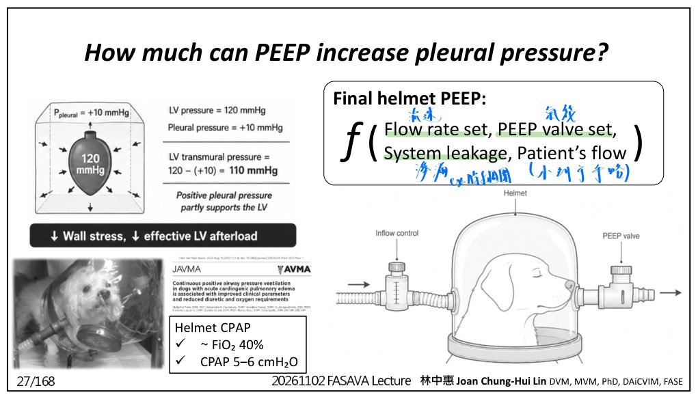
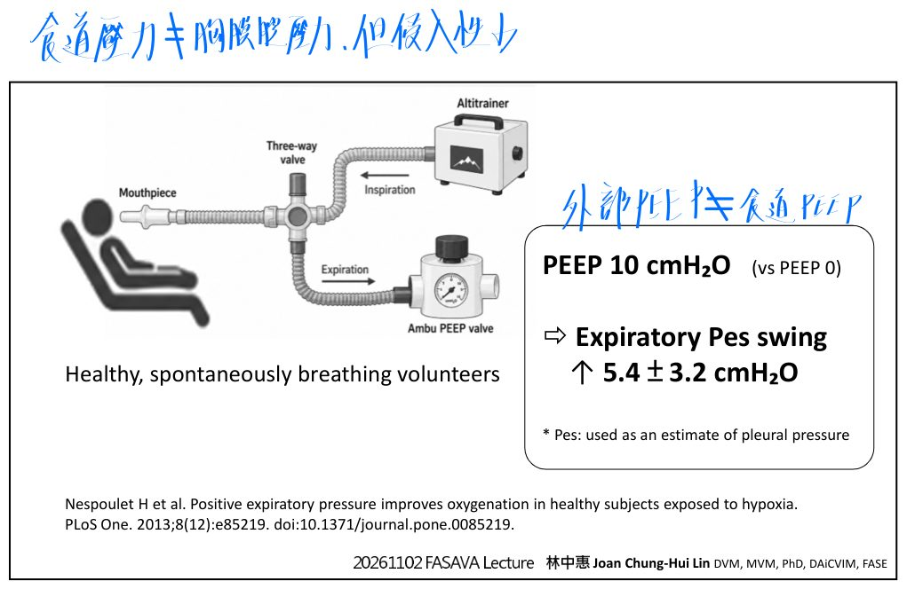
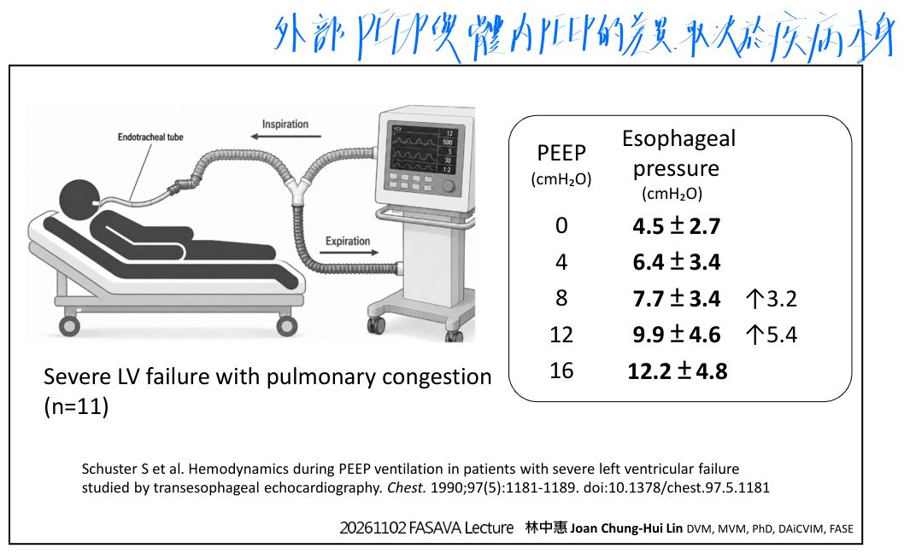
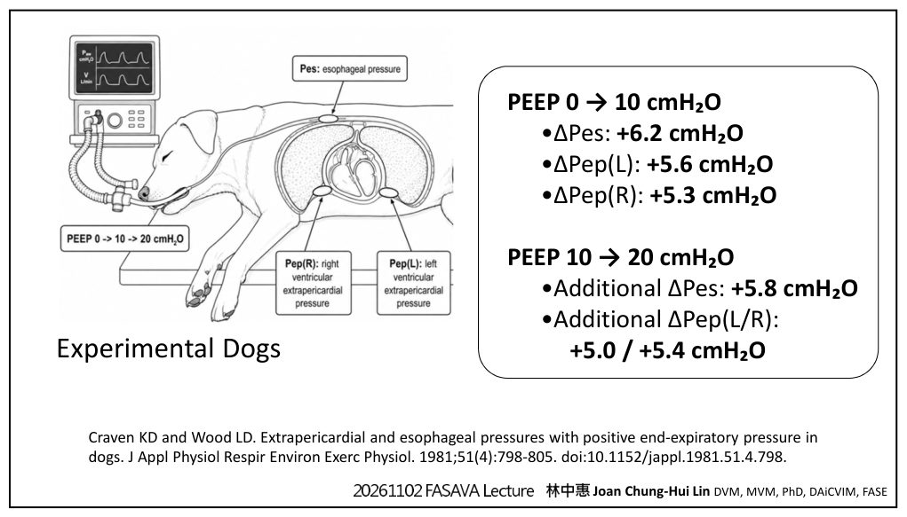
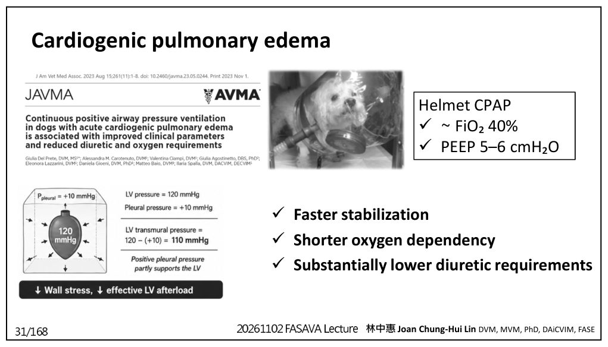
💡 Helmet 內實際的 PEEP 不是只看閥門，而是流速設定、PEEP 閥設定、系統漏氣、病患自己的吸氣流量四者共同決定。而且外面加的 PEEP 傳到胸膜腔（用食道壓 Pes 估計）只剩一部分：
| 研究 | 外加 PEEP | 胸內壓上升 |
|---|---|---|
| 健康人（Nespoulet 2013） | 0 → 10 cmH₂O | 吐氣 Pes 擺幅 ↑ 5.4 ± 3.2 |
| 實驗犬（Craven 1981） | 0 → 10 | Pes +6.2；左／右心包外壓 +5.6／+5.3 |
| 10 → 20 | Pes 再 +5.8；心包外壓再 +5.0／+5.4 | |
| 嚴重左心衰竭病人 n=11（Schuster 1990） | 0／4／8／12／16 | Pes 4.5／6.4／7.7／9.9／12.2 |
✍️ 筆記 食道壓力 ≈ 胸膜腔壓力，但較易測量 ❔；外部 PEEP → 食道 PEEP；外部 PEEP 傳到體內的增加幅度沒有外部設定那麼大 ❔。Helmet PEEP 的四個因素：流速、氣閥、漏氣、病患呼吸（小於…❔）。
💡 意思是：helmet 只設 5–6 cmH₂O，傳到心臟周圍大約只有一半（幾 cmH₂O），就足以有臨床效果；而且壓力小，對右心回流的副作用也小。
3. CPE 合併呼吸道疾病：藥物與噴霧的陷阱
▾心臟病犬常合併下呼吸道疾病（25–27）
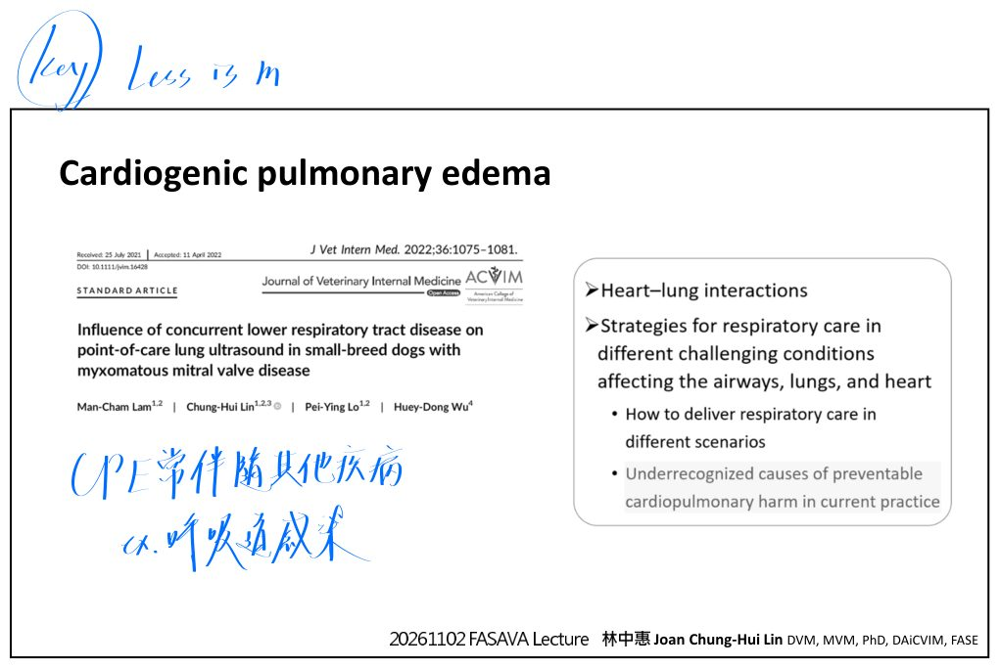
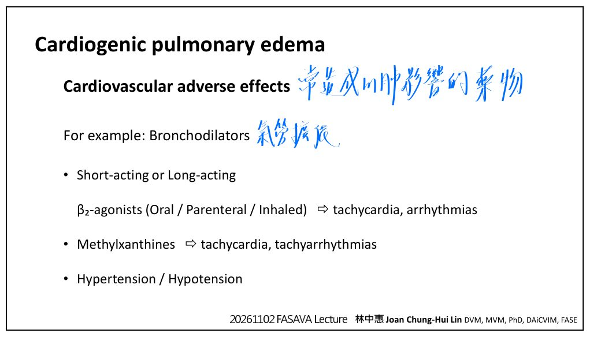
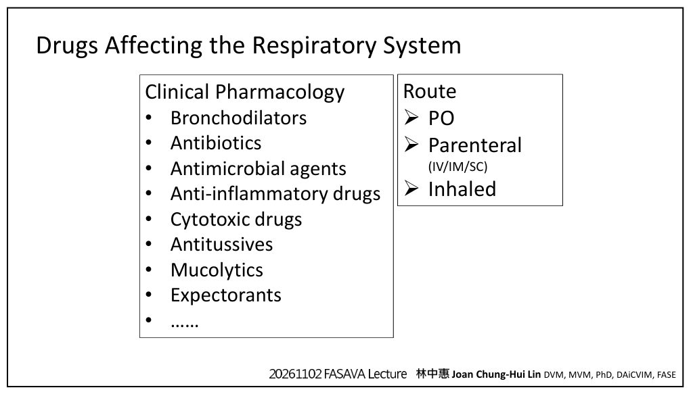
✍️ 筆記 key：Less is more。CPE 常伴隨其他疾病 ex. 呼吸道疾病。常造成心肺影響的藥物；氣管擴張劑。
💡 小型犬 MMVD 很多同時有氣管塌陷、慢性支氣管炎、支氣管軟化。講者團隊（Lam 2022）指出合併下呼吸道疾病會影響肺部 POCUS 的判讀——B 線不一定是心因性肺水腫。治療呼吸道的藥也會回頭影響心臟：
- β2 促效劑（短效或長效；口服／注射／吸入）→ 心搏過速、心律不整
- 甲基黃嘌呤類（theophylline 等）→ 心搏過速、快速性心律不整
- 血壓過高／過低
💡 呼吸系統用藥種類（第 27 張）：支氣管擴張劑、抗生素、抗微生物藥、抗發炎藥、細胞毒性藥、止咳藥、化痰藥、祛痰藥；給藥途徑有口服、注射（IV/IM/SC）、吸入。每一類都要想「對心臟有什麼影響」。
噴霧也有風險：鈉負荷（28–31）
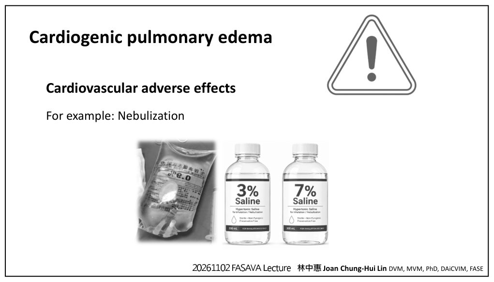
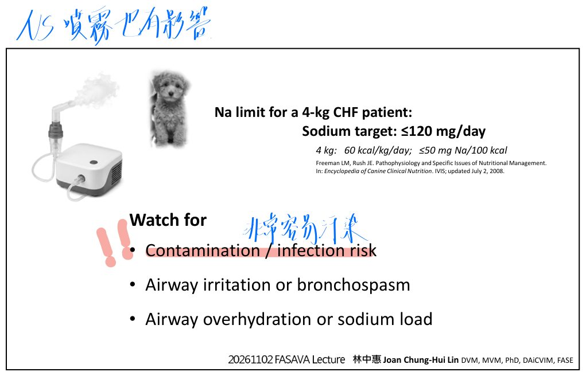
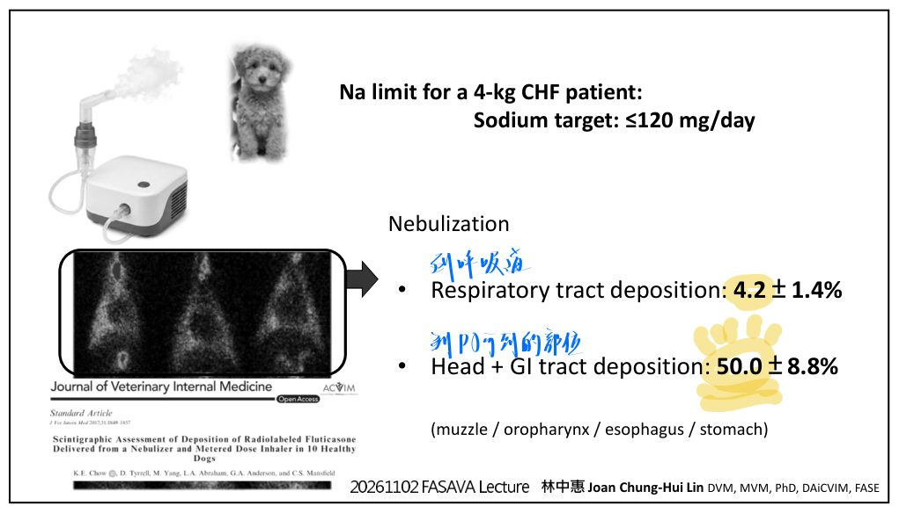
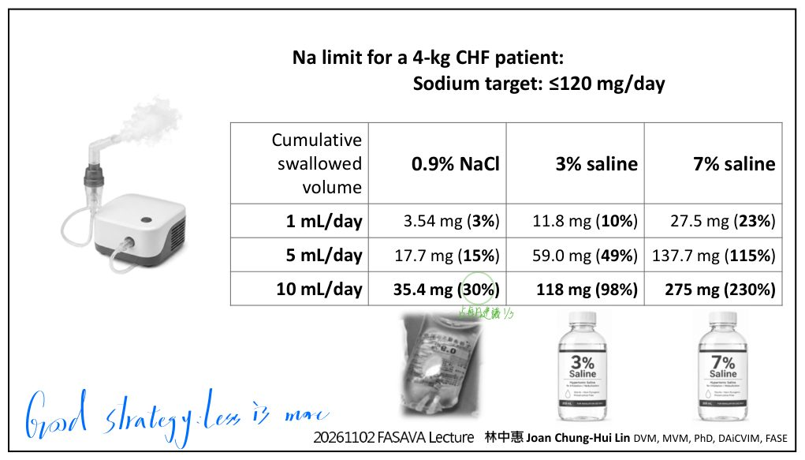
✍️ 筆記 NS 噴霧也有影響；非常容易汙染；到呼吸道 4.2%、到口內外的部分 50%；Good strategy：less is more。
- 要注意：汙染／感染（噴霧器沒清乾淨）、呼吸道刺激或支氣管痙攣、呼吸道過度水化或鈉負荷。
- 4 kg CHF 犬的鈉上限：每天 ≤ 120 mg（60 kcal/kg/day × 4 kg = 240 kcal；≤ 50 mg Na／100 kcal）。
- 噴霧真正沉積在呼吸道的只有 4.2 ± 1.4%；沉積在頭部＋消化道（口鼻、口咽、食道、胃）的有 50.0 ± 8.8%——大部分是被吞下去的。
| 每天累積吞下量 | 0.9% NaCl | 3% saline | 7% saline |
|---|---|---|---|
| 1 mL | 3.54 mg（3%） | 11.8 mg（10%） | 27.5 mg（23%） |
| 5 mL | 17.7 mg（15%） | 59.0 mg（49%） | 137.7 mg（115%） |
| 10 mL | 35.4 mg（30%） | 118 mg（98%） | 275 mg（230%） |
（括號內＝占每日 120 mg 鈉上限的比例）
💡 高張食鹽水噴霧常用來化痰，但對一隻 4 kg 心衰竭的狗，每天吞下 5 mL 的 7% 食鹽水就超過整天的鈉上限。所以講者強調 less is more：需要時才噴、選低濃度、量少、器材保持乾淨。
4. 非心因性肺水腫（NCPE）
▾NCPE 不是一種病（32–33）
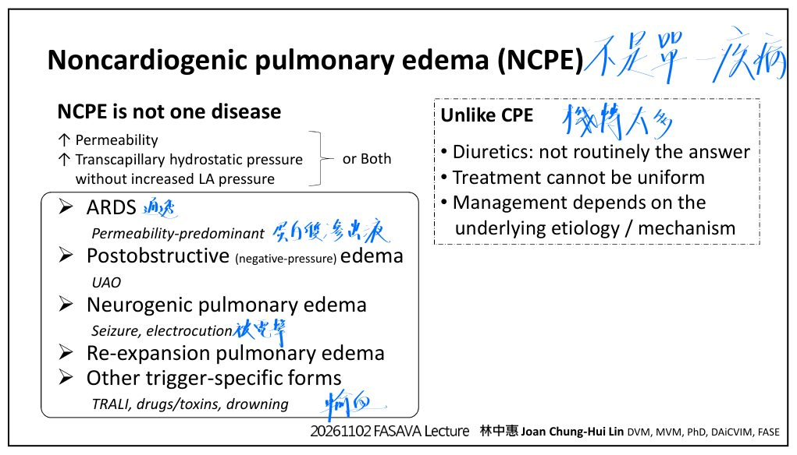
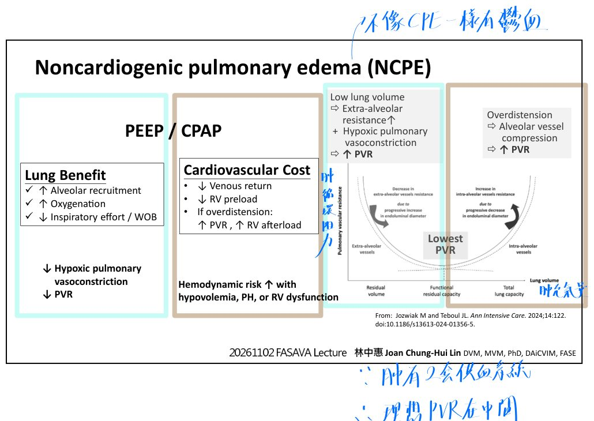
✍️ 筆記 NCPE 不是單一疾病，機轉很多；ARDS＝急性，通透性為主、容易滲出 ❔；神經性 ex. 癲癇、電擊；溺水。不像 CPE 一樣有固定機轉 ❔。∵ 肺有 2 套供血系統 ∴ 理想 PVR 在中間；肺容積。
| 類型 | 機轉／誘因 |
|---|---|
| ARDS／急性肺損傷 | 通透性為主 |
| 阻塞後（負壓性）肺水腫 | 上呼吸道阻塞（UAO） |
| 神經性肺水腫 | 癲癇、電擊 |
| 復張性肺水腫 | 塌陷的肺快速撐開（如大量抽胸水後） |
| 其他誘因 | TRALI（輸血相關急性肺損傷）、藥物／毒物、溺水 |
💡 和 CPE 不同：利尿劑不是常規答案、治療不一致、要看病因與機轉。通透性↑ 或「左心房壓不高、但微血管靜水壓升高」，或兩者都有。
💡 第 33 張的 U 形曲線：肺血管阻力（PVR）在功能性肺餘量（FRC）時最低。肺容積太小 → 肺泡外血管阻力↑＋缺氧性肺血管收縮 → PVR↑；肺過度膨脹 → 肺泡壁血管被壓扁 → PVR↑。PEEP／CPAP 的好處是打開塌陷肺泡（↑ 氧合、↓ 呼吸功、解除缺氧性血管收縮）；代價是 ↓ 靜脈回流、↓ 右心前負荷，壓太高還會 ↑ PVR、↑ 右心後負荷——對低血容、肺高壓、右心功能差的病患血行動力學風險高。
依類型處理（34–35）
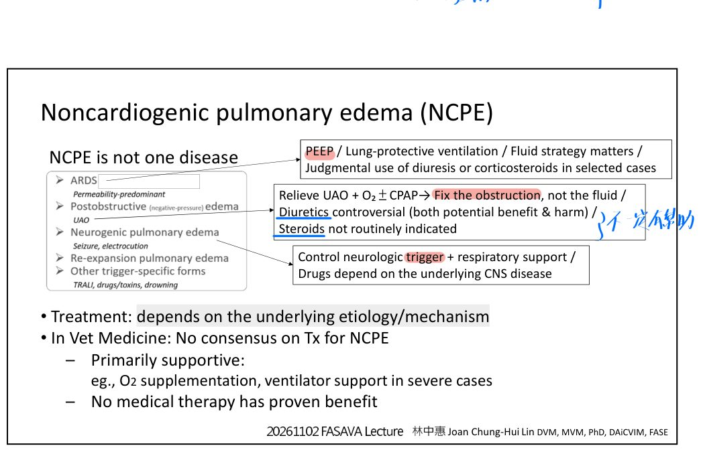
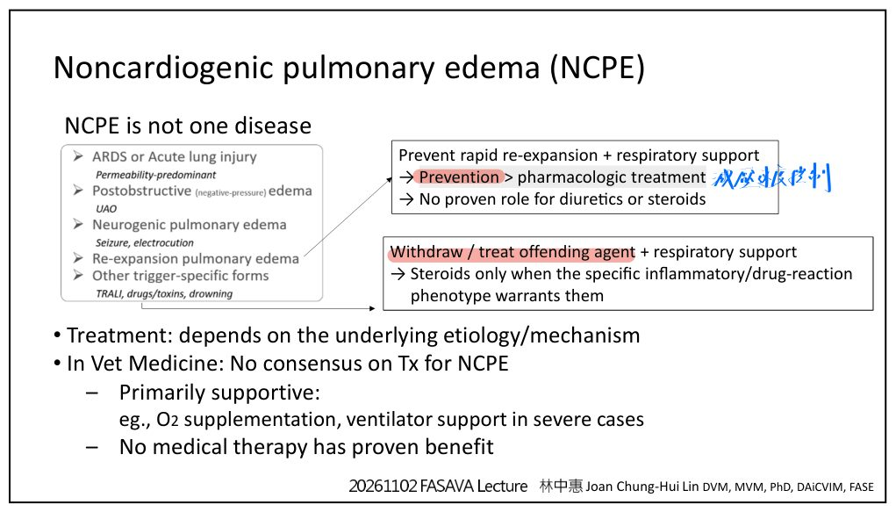
| 類型 | 處理重點 |
|---|---|
| ARDS | PEEP、肺保護性通氣、輸液策略很重要；利尿劑或類固醇只在特定病例審慎使用 |
| 阻塞後（負壓性） | 解除 UAO＋O₂ ± CPAP；處理的是阻塞，不是液體；利尿劑有爭議（可能有益也可能有害）；類固醇不常規 |
| 神經性 | 控制神經性誘因＋呼吸支持；用藥看中樞神經原發病 |
| 復張性 | 避免讓肺太快復張＋呼吸支持；預防 > 藥物治療；利尿劑或類固醇沒有證實的角色 |
| 其他誘因（TRALI、藥物、溺水） | 停用或治療致病因子＋呼吸支持；只有特定發炎／藥物反應型才用類固醇 |
✍️ 筆記 預防 > 藥物（成效非藥物）；利尿劑「有爭議的」。
💡 獸醫界對 NCPE 治療沒有共識，主要是支持療法（給氧，嚴重時呼吸器），沒有任何藥物被證實有益。實務：抽胸水時不要一次抽到負壓很大或抽太快，就是在預防復張性肺水腫。
5. 被忽略的傷害（一）：貓心絲蟲相關呼吸道疾病（HARD）
▾我們還漏了什麼？（36–38）
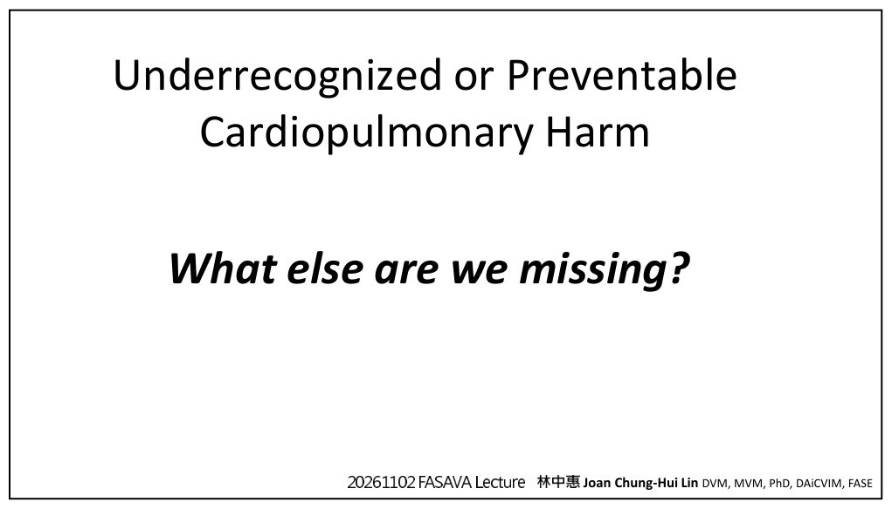
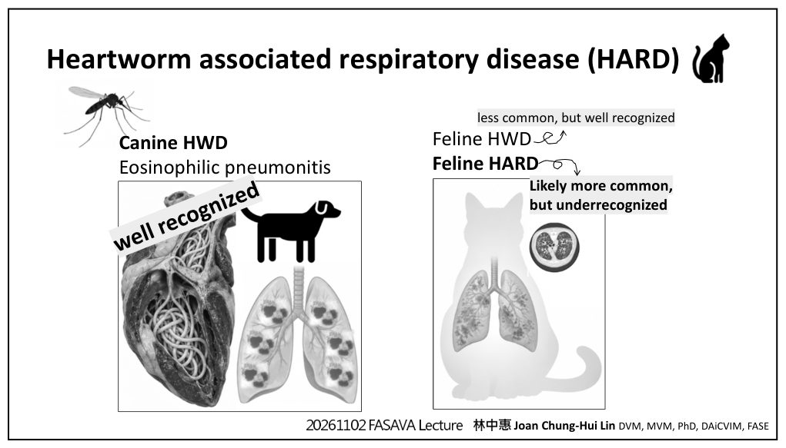
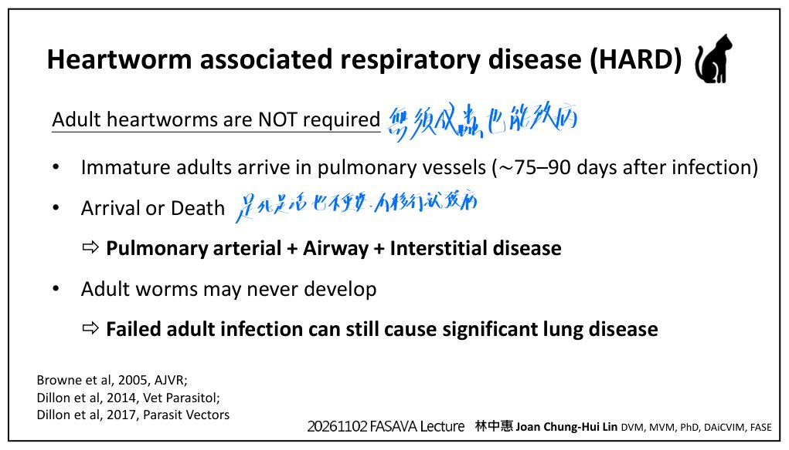
💡 犬心絲蟲病大家很熟（嗜酸性肺炎等）；貓的 HARD 可能更常見，但被低估。關鍵是貓不需要有成蟲就會生病：
- 未成熟成蟲在感染後約 75–90 天到達肺動脈
- 蟲「到達」或「死亡」都會引起肺動脈＋呼吸道＋間質的病變
- 成蟲可能根本沒長成 → 沒成功感染的成蟲，仍能造成嚴重肺病
✍️ 筆記 無須成蟲也能致病；是幼蟲進入肺、在肺內死亡就造成發炎反應 ❔。
診斷：抗體 vs 抗原（39–40）
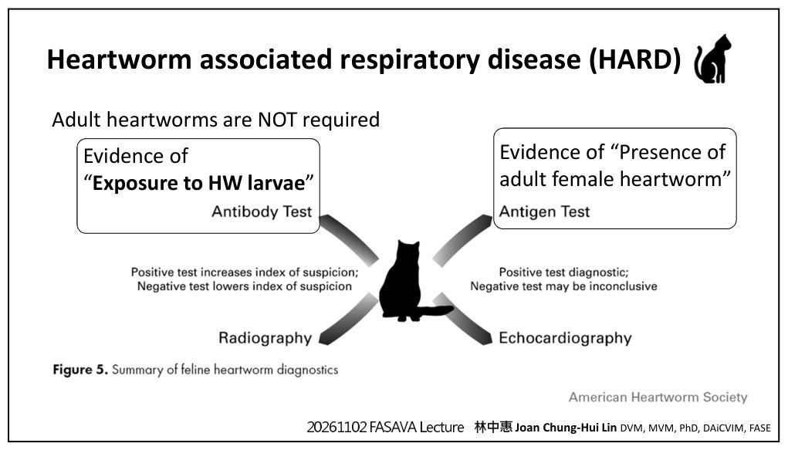
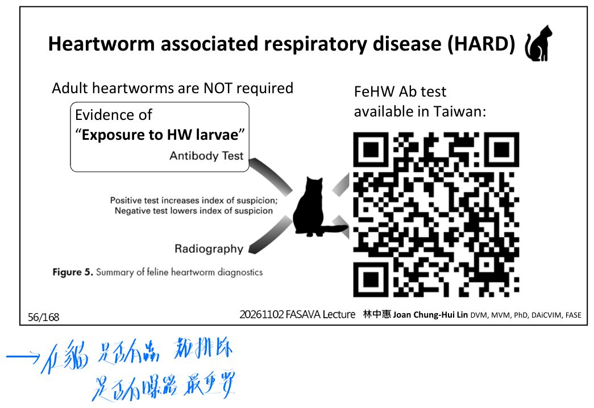
抗體檢測 → 「接觸過幼蟲」的證據
- 陽性：提高懷疑
- 陰性：降低懷疑
- 可搭配胸腔 X 光
抗原檢測 → 「有成熟雌蟲」的證據
- 陽性：可確診
- 陰性：無法排除
- 可搭配心臟超音波（看到蟲體）
✍️ 筆記 → 在貓：是否有成蟲很難排除；是否有暴露（抗體）最重要 ❔。
💡 台灣有貓心絲蟲抗體檢測（投影片 QR code 連到 Winni Chen 實驗室的送檢資訊）。
台灣的盛行率（41–43）
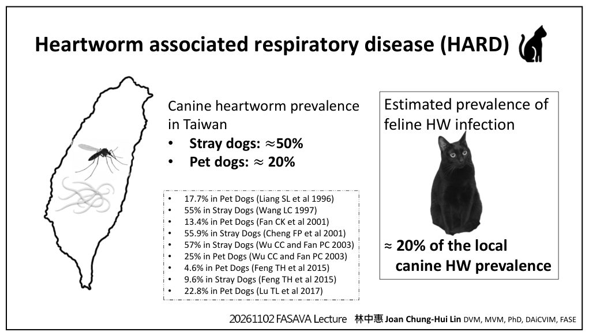
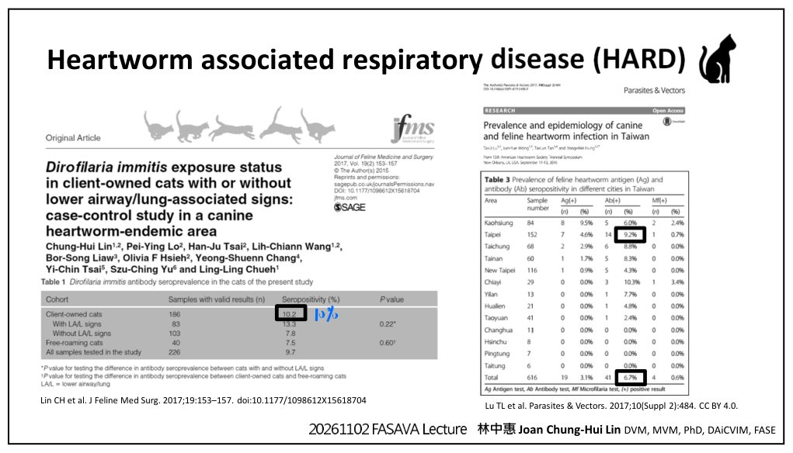
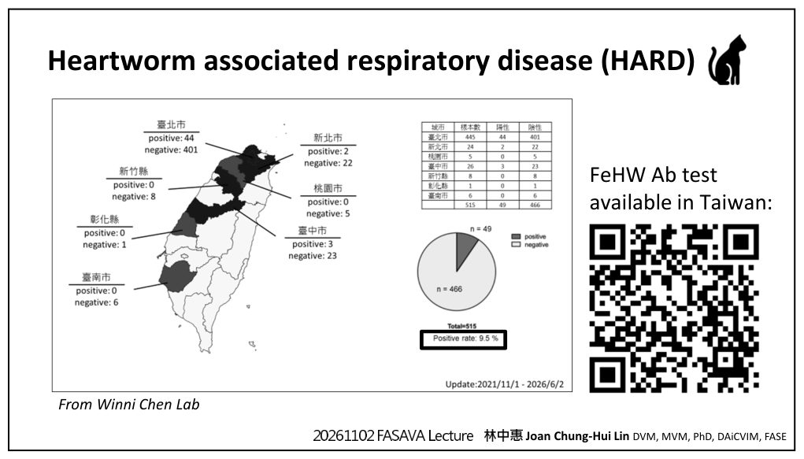
- 台灣犬心絲蟲：流浪犬 ≈ 50%、家犬 ≈ 20%（1996–2017 多篇研究）
- 貓心絲蟲感染估計 ≈ 當地犬盛行率的 20%
- Lin 2017 JFMS：心絲蟲流行區家貓的抗體陽性率約 10%，有／無下呼吸道症狀的貓陽性率沒有顯著差異
- Winni Chen 實驗室 2021/11–2026/6 送檢：49/515，陽性率 9.5%
✍️ 筆記 10%。
為什麼 HARD 很「hard」？（44–46）
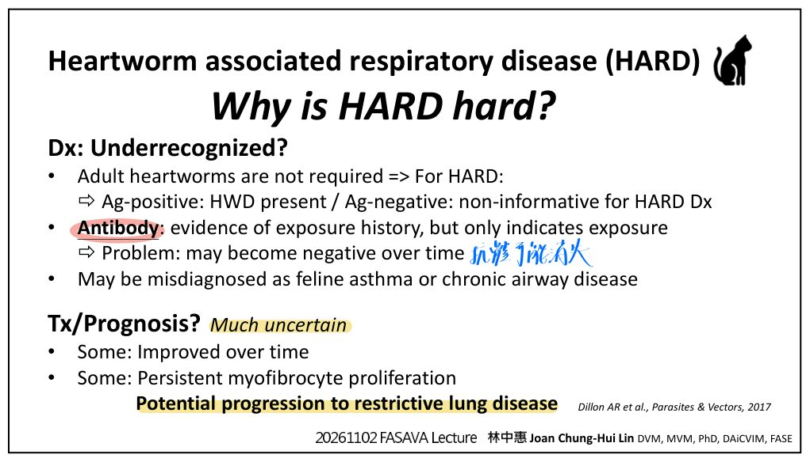
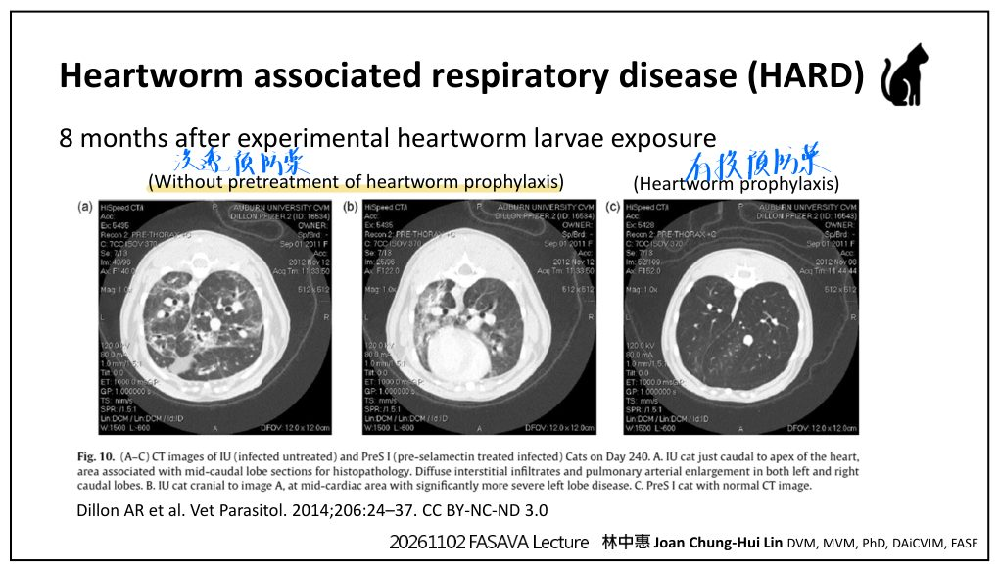
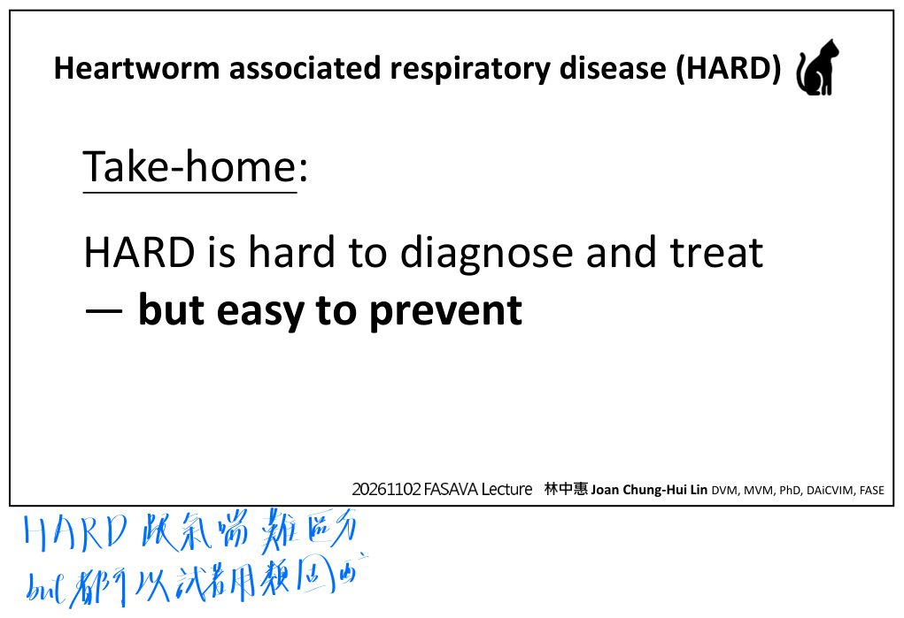
- 診斷被低估：抗原陽性＝有成蟲；抗原陰性對 HARD 沒有診斷意義。抗體只代表接觸過，而且可能隨時間轉陰。很容易被誤診成貓氣喘或慢性呼吸道疾病。
- 治療與預後很不確定：有些隨時間改善；有些持續肌纖維母細胞增生，可能進展成限制性肺病。
- Dillon 2014 實驗：未預防的貓感染幼蟲 8 個月後 CT 有瀰漫性間質浸潤與肺動脈擴大；事先用 selamectin 預防的貓 CT 正常。
✍️ 筆記 抗體消失。沒有預防藥／有預防藥。HARD 跟氣喘難區分，but 都可以試著用類固醇。
💡 實務：在心絲蟲流行區（台灣就是），貓也應該全年使用心絲蟲預防藥，包括室內貓（蚊子會進屋）。
6. 被忽略的傷害（二）：溴化鉀（KBr）誘發的貓支氣管炎
▾2002 年就知道了（47–49）
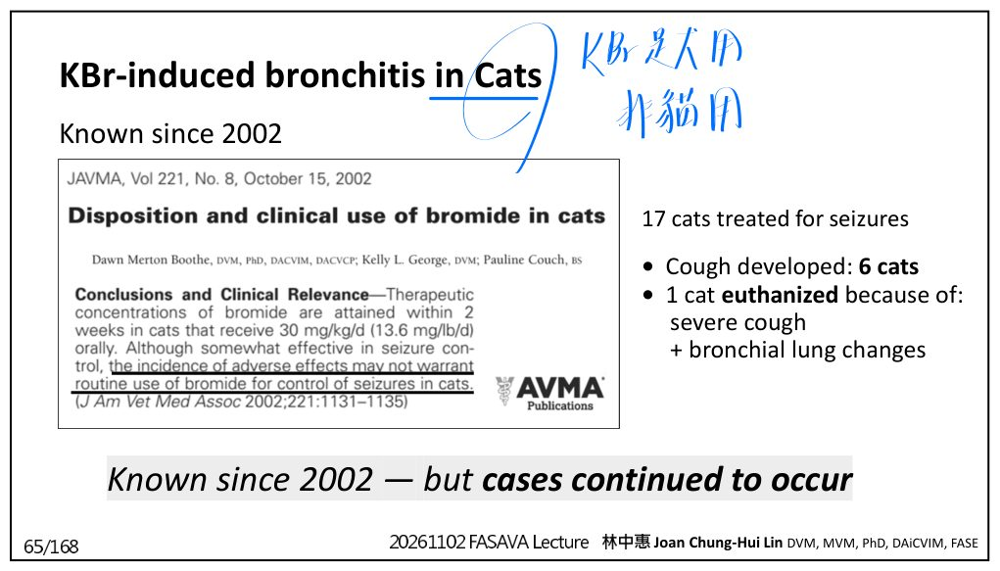
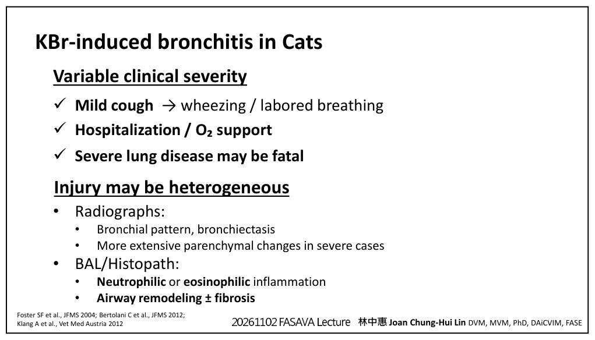
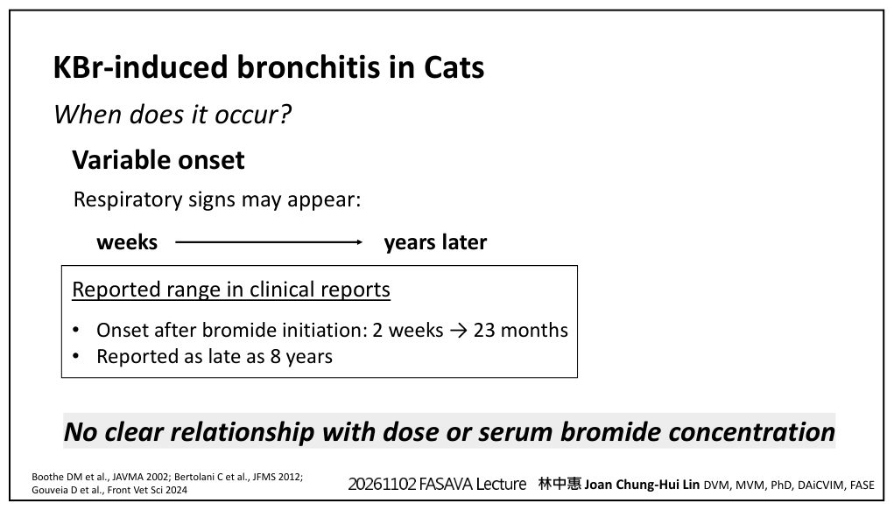
✍️ 筆記 KBr 是犬用，非貓用。
- Boothe 2002 JAVMA：17 隻用溴化物控制癲癇的貓，6 隻出現咳嗽，1 隻因嚴重咳嗽＋支氣管肺變化安樂死。結論是不良反應的發生率不支持常規用溴化物治療貓癲癇。2002 年就知道，但病例仍持續發生。
- 嚴重度差很多：輕微咳嗽 → 喘鳴、呼吸費力 → 需要住院給氧 → 嚴重肺病可能致死。
- X 光：支氣管紋、支氣管擴張；嚴重時有較廣泛的實質變化。BAL／病理：嗜中性球或嗜酸性球發炎、呼吸道重塑 ± 纖維化。
- 發生時間不固定：開始用藥後 2 週到 23 個月，最晚有 8 年的報告；和劑量或血中溴濃度無明確關係。
為什麼？怎麼處理？（50–52）
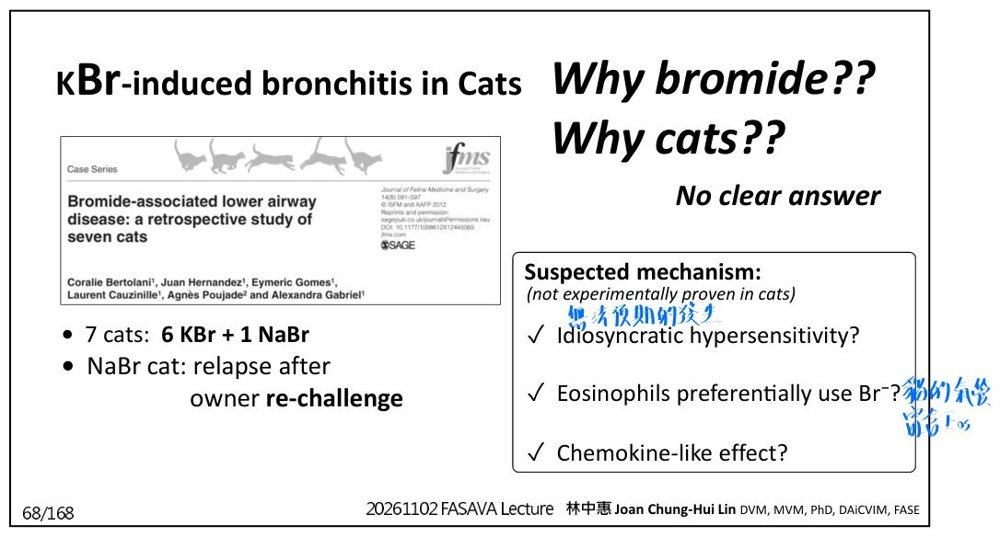
- Bertolani 2012 JFMS：7 隻貓（6 隻 KBr＋1 隻 NaBr），NaBr 那隻在飼主再次給藥後復發——支持是溴離子本身的問題。
- 可能機轉（貓未經實驗證實）：特異體質過敏反應？嗜酸性球優先利用 Br⁻？類趨化激素作用？
- 處理：停用 KBr！需要時給呼吸支持（O₂）；用類固醇控制呼吸道發炎（很多貓最後能完全停類固醇，但不是全部）；追蹤恢復——改善可能不是立刻，有些可逆、有些不可逆。
✍️ 筆記 無法預期的反應（idiosyncratic）；貓的氣管嗜酸 ❔；不一定可逆。
💡 貓的抗癲癇首選通常是 phenobarbital，其次 levetiracetam、zonisamide 等。如果接手一隻正在吃 KBr 的貓出現咳嗽，先想到藥物。
7. 被忽略的傷害（三）：外源性脂質肺炎（礦物油）
▾定義與典型暴露（53–56）
- 非感染性的發炎／刺激性肺炎：肺泡內有細胞內或細胞外的脂肪滴，常合併混合發炎細胞與纖維化。
- 外源性＝吸入含脂物質；內源性＝脂質來自肺內（常和阻塞性肺病有關）。
- King 教科書第 60 章（Norris）：「在貓，長期強迫餵礦物油治療便秘和毛球，似乎是外源性脂質肺炎最常見的原因。」
- 典型暴露：為了「治療」便秘、毛球而長期反覆吸入。症狀從輕微到嚴重呼吸窘迫都有。
💡 為什麼礦物油特別危險——無聲吸入（silent aspiration）：
- 幾乎不刺激呼吸道 → 很少或沒有咳嗽反射，吸進去也不咳
- 抑制黏膜纖毛運輸 → 吸進去的油清不掉
- 肺泡巨噬細胞吞了油卻無法代謝 → 細胞退化、油再被釋放 → 持續累積、慢性發炎
影像與預後（57–62）

- 影像常和臨床不相符：症狀輕微，X 光／CT 卻變化明顯；可能像肺腫瘤（腫塊樣病灶，Can Vet J 2011 病例報告）。
- 預後（由好到壞）：非常短期暴露＋非常幸運才完全恢復 → 臨床改善但肺損傷持續 → 不可逆肺纖維化 → 慢性低血氧性呼吸衰竭 → 肺心症 → 續發肺部感染（特別是非結核分枝桿菌 NTM）→ 長期病灶區發生肺癌（人醫報告，因果未證實）→ 死亡。
💡 替代：便秘用 lactulose、PEG 3350、增加纖維與水分；毛球靠規律梳毛、高纖處方食品。很多飼主會自己在網路上看到「餵礦物油／嬰兒油」，問診時要主動問。
8. 被忽略的傷害（四）：Minoxidil 的心肺毒性
▾生髮水「落建」與作用機轉（63–65）
💡 Minoxidil 是落建（Regaine）等生髮產品的成分，台灣很容易買到。它是 KATP 通道開啟劑：
- 強力小動脈擴張 → ↓ 全身血管阻力 → 低血壓 → 反射性心搏過速、收縮過強 → ↑ 心肌耗氧
- ↓ 舒張壓＋心搏過速 → ↓ 心內膜下灌流 → 心肌損傷／乳頭肌—心內膜下壞死
- 血管擴張 → 代償性交感／RAAS 活化 → 腎臟滯留鈉水、↑ 血漿容積 → 肺水腫／胸水
- 可能 ↑ 血管通透性 → 非心因性水腫；藥物誘發發炎性肺損傷 → 間質性或機化性肺炎、肉芽腫性發炎（機轉都不明確）
犬貓的表現（66–68）
心血管毒性
- 低血壓＋心搏過速
- 心肌損傷（↑ cTnI）
- 犬（實驗毒理）：左心室乳頭肌／心內膜下壞死＋右心房出血病灶
- 貓：暫時性心肌增厚 ± 左心房擴大、CHF
肺部毒性
- 呼吸急促／窘迫
- 肺水腫
- 貓的呼吸表現更明顯：胸水 ± 肺鬱血，有嚴重致死的報告
- 犬貓尚未證實直接藥物性肺損傷（人醫有個案）
💡 第 68 張的重點是暴露途徑：貓舔到主人頭皮、靠在剛擦藥的枕頭／手上、理毛時舔到；狗咬破瓶子。很少的量就夠。貓的暫時性心肌增厚會被誤認為 HCM（呼應 Côté 場次講的 TMT）。
治療與死亡率（69–72）
| 問題 | 處理 |
|---|---|
| 所有暴露 | 去汙染＋監測（即使沒症狀） |
| 低血壓 | 恢復血管張力：謹慎輸液；持續低血壓時早點用升壓劑 |
| 胸水 | O₂＋胸腔穿刺 |
| 肺水腫 | O₂ ± 謹慎使用 furosemide |
| 血壓恢復後仍嚴重心搏過速 | 考慮短效 β 阻斷劑（esmolol） |
| 嚴重／難治 | IV 脂肪乳劑（可能輔助）、血液透析（可能救援） |
| 研究 | 貓死亡 | 犬死亡 |
|---|---|---|
| Tater 2021（87 例有症狀） | 8/62（12.9%） | 0/25（0%） |
| McMullen 2025（94 例已發表中毒） | 10/68（14.7%） | 0/26（0%） |
| Ong 2025（ASPCA 2013–2024，只算已知結果） | 5/16（31.3%）* | 0/12（0%） |
* 3 隻死亡＋2 隻安樂死；701 例中只有 28 例有已知結果，31.3% 不能解讀成整體致死率。三組資料有重疊，不能合併。
✍️ 筆記 狗中毒 but 死亡率不高 ❔。
💡 這一大段的總結（第 72 張）：有些問題不需要新藥或新設備，只需要我們辨認風險 → 避免或移除誘因 → 預防傷害。有時候，「知道」就是最重要的介入。
9. 第三類肺高壓與肺心症
▾肺心症的定義（73–75）
✍️ 筆記 Group III PH＝肺高壓；Cor pulmonale＝肺心症；呼吸系統 → 右心受影響。
💡 肺心症：由原發呼吸系統疾病造成的右心室結構和／或功能改變。兩個常見誤解：
- 肺心症 ≠ 右心衰竭：肺心症常會造成右心衰竭，但右心衰竭也可以來自和肺無關的原因（嚴重肺動脈狹窄、三尖瓣發育不良…）。
- 肺心症 ≠ 肺高壓：例如左心病造成的肺高壓就明確排除在肺心症定義之外。
肺高壓定義與分類（76–83）
| 定義 | 數值 |
|---|---|
| 傳統 | 收縮期 PAP > 35 mmHg；平均 PAP > 25 mmHg |
| 人醫新定義（2022 ESC/ERS，2025 ASE 也採用） | 平均 PAP > 20 mmHg |
| 2020 ACVIM 犬共識 | mPAP ≥ 25 mmHg（引用 2013 人醫） |
| 嚴重度（收縮壓） | 輕度 35–55、中度 55–80、重度 > 80 mmHg |
✍️ 筆記 有分類；右心室／左心室。原因：呼吸系統、缺氧。
💡 微血管前（pre-capillary）＝問題在肺動脈端（如 CTEPH、肺病），右心室直接受壓；微血管後（post-capillary）＝問題在左心，壓力往回傳。ACVIM 犬肺高壓六大類：
- 肺動脈高壓（1′ 肺靜脈閉塞病／肺微血管血管瘤病）
- 左心疾病
- 呼吸道疾病／缺氧（本場重點）
- 肺栓塞／血栓
- 寄生蟲（心絲蟲、Angiostrongylus）
- 多因素或機轉不明
💡 分類從 1973 年 Geneva 一路演變到 2024 Barcelona，因為預後與治療隨類別不同。第三類又細分：3a 慢性阻塞性呼吸道疾病（氣管或主支氣管塌陷、支氣管軟化）、3b 原發肺實質病（間質性肺病：纖維化、機化性肺炎、肺泡蛋白沉積、嗜酸性肺病…；感染性肺炎；瀰漫性肺腫瘤）、3c 睡眠呼吸障礙、3d 高海拔、3e 發育性、3f 其他。接下來兩段分別講 3a 的支氣管軟化和 3b 的 ILD。
10. 支氣管軟化（BM）：台灣犬的最新證據
▾BM 與肺高壓（84–87）
✍️ 筆記 支氣管軟化；都約 4 成。出現咳嗽、氣管塌陷 → 很可能是 BM 重症 ❔。診斷後中位數約 2.7 年；心肺相關。後續可能會有肺高壓。
- 先前研究：Bottero 2013——動態＋靜態塌陷的 BM 和肺高壓顯著相關；Gamracy 2022——接受心超的 BM 犬約 40% 有臨床相關的肺高壓機率；Chang 2026——44.4% 在追蹤期間出現中至高肺高壓機率。
- Chang 2026 JVIM（講者團隊，72 隻支氣管鏡確診 BM 犬長期追蹤）：全因中位存活 998 天（約 2.7 年）；死亡中 64% 是心肺相關。
- 肺高壓盛行率：支氣管鏡診斷時 28% → 追蹤結束時 44%。診斷時心超正常，不代表以後不會有肺高壓。
- 肺高壓相關風險：肺炎 HR 3.2、全因死亡 HR 2.0、心肺死亡 sHR 2.4。
用心超追蹤肺高壓（88–96）
💡 三尖瓣逆流峰速（pTRV）估肺動脈收縮壓：簡化 Bernoulli 壓差 = 4v²。例：TR 4.2 m/s → 4 × 4.2² = 70.56 → 右心室到右心房壓差 71 mmHg；加上右心房壓 5 mmHg → 肺動脈收縮壓約 76；右心房壓 10 → 約 81 mmHg。
💡 其他心超方法：舒張早期 PR 峰速、右肺動脈擴張指數（RPAD）、TAPSE、肺靜脈／肺動脈比（PV/PA）。
✍️ 筆記 心臟的壓力 ↑ ❔。TR 流速＋心臟形態變化。
| pTRV（m/s） | 出現肺高壓徵象的解剖部位數 | 肺高壓機率 |
|---|---|---|
| ≤ 3.0 或量不到 | 0 或 1 | 低 |
| ≤ 3.0 或量不到 | 2 | 中 |
| 3.0–3.4 | 0 或 1 | 中 |
| > 3.4 | 0 | 中 |
| ≤ 3.0 或量不到 | 3 | 高 |
| 3.0–3.4 | ≥ 2 | 高 |
| > 3.4 | ≥ 1 | 高 |
（ACVIM 2020 Table 2。三個解剖部位：心室、肺動脈、右心房與後腔靜脈）
💡 問題：常咳嗽、呼吸費力的狗很難量到好的 TR 頻譜（訊號不完整會低估，羽毛狀邊緣會高估）。而且同一個「解剖部位」（例如右心室）在不同嚴重度的變化程度不同，ACVIM 表只計「有沒有」，沒算「多嚴重」。Johnson 1999、Pyle 2004 早就發現心臟的結構變化程度和肺高壓嚴重度平行——所以講者團隊發展了把嚴重度分級的分數。
PRIME score：25 分肺高壓分數（97–98）
| 6 個心超項目 | 分數 |
|---|---|
| 右心室擴大 | 0–6 |
| 右心室壁增厚 | 0–2 |
| 右心房擴大 | 0–6 |
| 心室中膈扁平 | 0–4 |
| 肺動脈擴大 | 0–6 |
| 右心室流出道頻譜收縮中期切跡（notching） | 0–1 |
- 和 pTRV 強正相關：rs = 0.88；排除 LA:Ao ≥ 2.0 後 rs = 0.92。
- 預測 pTRV ≥ 3.4 m/s：AUC 0.95；≥ 4.3 m/s：AUC 0.98；5 折交叉驗證準確度 86 ± 10%、95 ± 4%。
- 分數 ≥ 3（或 4）→ 提示 pTRV ≥ 3.4 m/s；分數 ≥ 9 → 提示 pTRV ≥ 4.3 m/s。
- LA:Ao ≥ 2.0 時不要依賴這個分數（左心病會干擾）。在微血管前肺高壓表現最好，約 90% 分類正確。
✍️ 筆記 Health＝Point 0 → Sick＝25。只要看右側躺 3–4 個切面 ❔。左心房擴大（時）不準確。
肺炎與預後因子（99–101）
- 35% BM 犬發生肺炎／肺部發炎，其中 44% 在第一次記錄到的發作就死亡——急性惡化要認真看待。
- 肺炎風險因子：年齡（每年 HR 1.25）、需要類固醇的發炎性呼吸道疾病（IAD-steroid）（HR 3.09）、肺高壓（HR 3.20）。
| 結果 | 獨立預測因子 |
|---|---|
| 肺炎／肺部發炎 | 年齡、IAD-steroid、肺高壓 |
| 全因死亡 | 年齡、重度 BM、肺高壓 |
| 心肺死亡 | 高級別氣管塌陷、IAD-steroid、肺高壓 |
💡 預後取決於 BM 嚴重度和整體共病，不只是「有沒有 BM」。BM 分級（Lin 2023 Vet Q 改編）：輕度＝塌陷 25–50%、LPB/RPB/LB1/RB1/RB2/RB3/RB4 中 ≤ 2 處；重度＝≥ 3 支支氣管塌陷 51–75% 或至少 1 支 > 75%，加上上述 ≥ 3 處受影響或有分節支氣管受影響；中度介於兩者。肺高壓盛行率：重度 BM 54.6% vs 輕中度 11.8%。
✍️ 筆記 1/3 的狗有肺炎，其中近一半在第一次肺炎就死亡。免疫抑制劑控制的呼吸道疾病（IAD）。肺高壓與肺炎相關 ❔。Poodle 好發。grade 3、4 氣管塌陷。塌的程度、塌的數量。
臨床上該怎麼做（102–105）
結構性呼吸道疾病
- BM 嚴重度分級
- 氣管塌陷分級
- 支氣管擴張
可處理的共病
- 發炎性呼吸道疾病
- 感染
- 體重（BCS）
肺高壓
- 基準評估
- 需要時重新評估
急性惡化
- 新出現的呼吸急促
- 呼吸更費力
- 咳嗽突然變嚴重
✍️ 筆記 BM 會致死。如：肺炎、體重 ❔。PEEP 可以打開 BM 的氣管，但要用少量，多 PEEP 須小心。
💡 PEEP／CPAP 理論上可以撐開軟化塌陷的支氣管，但 BM 犬常合併肺高壓——PEEP 過高會壓迫肺泡血管、↑ PVR、↑ 右心後負荷、↓ 回流。所以「打開氣道」和「右心代價」要平衡，用低壓。
11. 間質性肺病（ILD）
▾兩個常見誤解與分類（106–112）
✍️ 筆記 間質性肺病；限制性。
- 限制性肺病（如肺纖維化）是呼吸道疾病相關肺高壓的已知原因；ILD／限制性肺病可能比阻塞性呼吸道病造成更嚴重的肺高壓（Yuchi 2023 JVIM）。
- 兩個誤解：X 光間質紋 ≠ ILD ≠ 肺纖維化；沒有間質紋 ≠ 沒有 ILD ≠ 沒有纖維化。
- 「間質」這個名字容易誤導：病灶可能也在肺泡、小呼吸道、血管和肋膜。人醫已知 > 200 種 ILD；犬貓 2019 年由 Reinero 參考人醫提出分類。
| 大類（Reinero 2019） | 內容 |
|---|---|
| 1. 特發性間質性肺炎（IIPs） | 散發／家族性纖維化 ILD、NSIP 與 LIP、AIP、COP、其他 |
| 2. 已知原因的 ILD | 吸入性（塵肺、其他吸入物 → 過敏性肺炎樣 ILD）；續發性（藥物、放射線、免疫媒介） |
| 3. 其他 | 嗜酸性肺病、肺泡蛋白沉積症、瀰漫性肺泡出血、脂質肺炎、肺透明變性、LCH/PLCH、肺泡微石症 |
- 纖維化 ILD：最有名的是西高地白梗（WHWT）的犬特發性肺纖維化（IPF）——組織學混合 UIP 與 NSIP 特徵、像人類 IPF 一樣進行性；其他犬種也有。貓和人或犬的 IPF 不太一樣：可能很年輕、有些沒有明顯呼吸症狀。
- NSIP：細胞型或纖維化型；預後比 IPF 好，特別是細胞型。
✍️ 筆記 預後 bad（WHWT 西高地白梗）；預後不一定；預後較佳（NSIP）。
💡 肺纖維化是終末反應，不是單一疾病 → 要積極找潛在原因；切片要取有代表性、較早期的病灶，不只是終末疤痕；診斷要整合臨床、影像、病理。目標：在不可逆纖維化前找出可治療的驅動因子。
機化性肺炎與過敏性肺炎（113–118）
- 機化性肺炎：對肺損傷的修復反應，肺泡內纖維母細胞增生；通常用抗發炎／免疫抑制治療可逆。
- COP（原因不明）：人——瀰漫型用類固醇（有些要長期）、少數不需治療、局部型手術切除。犬——有些對類固醇有反應；1 隻肺葉切除後治癒；有些需要免疫抑制劑量類固醇；在呼吸衰竭前診斷和治療，預後良好到極佳。貓——只有 1 例，症狀起伏 18 個月，結果不明。
- 過敏性肺炎（HP）：吸入抗原後小呼吸道與肺實質的免疫媒介發炎。人分非纖維化（發炎型，可改善）和纖維化型。人的胸部 X 光可能正常；靠 CT＋暴露史＋BAL 淋巴球增多診斷。犬有自然病例，貓尚無確認病例。
✍️ 筆記 預後良好；纖維化肺炎 ❔；Rx 類固醇或免疫抑制劑，或手術。Puff ball mushroom。出名：非常容易導致 ILD ❔。用免疫抑制劑期間 → 沒有症狀 ❔。
病例：Lycoperdonosis（馬勃菌孢子吸入）
- 7 歲去勢公 Cocker Spaniel，可自由進出鄉下土地、大量挖土；10 天進行性嗜睡、呼吸急促、咳嗽
- FNA：化膿性肉芽腫發炎；看到 3–5 µm 蘑菇孢子；BAL 淋巴球增多
- Lycoperdon＝馬勃菌（puffball），長在草地、草坪、林地落葉與腐木，公園和庭院也有，台灣也有
- 以前犬的報告多是急性、嚴重／猛爆型，6 隻只活 3 隻
- 本例：糖皮質素免疫抑制 → 臨床快速恢復；2 個月無症狀、BAL 正常、CT 明顯改善
- 1 年後：仍無症狀，但 CT 出現新的實質與小呼吸道病變，BAL 再次找到孢子 → 再暴露＋慢性非纖維化 HP
不同病程 → 不同治療目標（119–124）
| 病程 | 例子 | 目標 | 做法 |
|---|---|---|---|
| 可能可逆 | COP、非纖維化 HP、細胞型 NSIP | 緩解／消退 | 移除誘因、抗發炎、免疫抑制 |
| 可逆但可能復發或進展 | COP、部分 NSIP、部分 HP | 維持緩解、預防進展 | 治療活動性發炎、消除病因／暴露 |
| 進行性纖維化 | IPF、其他進行性纖維化 ILD | 減緩進展、穩定病情 | 找出並控制持續的肺損傷（如逆流）、監測並治療併發症（如肺高壓）、新臨床試驗（目前沒有證實有效的治療） |
12. 病例：夜間反覆咯血的西施犬
▾病史（125–128）
- 6.5 歲已絕育母西施犬。發作都在晚上睡著後：突然驚醒、呼吸速率 > 90 次/分，快速進展成嚴重端坐呼吸，有粗糙濕囉音；間歇咳嗽，接著咯血。
- 每次到急診，支持療法後幾小時內呼吸窘迫就緩解；發作之間完全正常。
- 發作間隔從每 4–7 個月 → 縮短到每 2–3 個月。
- 急診：肺部浸潤＋CRP ↑ → 暫定肺炎 → O₂＋IV 輸液＋抗生素；之後幾天 X 光異常逐漸消退。
✍️ 筆記 咳血。
💡 想一想：真的是肺炎嗎？肺炎不會「幾小時」就好，X 光也不會幾天就退。
一個一個排除（129–136）
💡 咯血常見鑑別診斷——全部被劃掉：心絲蟲、肺癌、黴菌感染、肺栓塞、肺葉扭轉、肺高壓、鬱血性心衰竭、下呼吸道異物、全身性凝血病、肺出血（如鉤端螺旋體）。
| 假設 | 嘗試／檢查 | 結果 |
|---|---|---|
| 睡眠中胃食道逆流造成反覆肺炎？ | Omeprazole、maropitant、mosapride | 仍再發 ✗ |
| 中央呼吸道血管異常？ | 第 5 次發作後一週支氣管鏡＋BAL | 無血管異常；普魯士藍確認含鐵血黃素、少量新鮮紅血球；無感染證據 ✗ |
| 不明原因暫時性肺高壓？ | 有幾次發作似乎在美容後隔天 → 美容前給 sildenafil 2 mg/kg PO | 仍再發 ✗ |
| 非典型 NCPE？（類似馬運動誘發肺出血 EIPH、瑞典獵犬肺水腫） | Furosemide 1 mg/kg PO q12h，夜間呼吸急促時加到 4 mg/kg | 前 2 個月沒發作，之後又進急診——furosemide 無法預防 ✗ |
✍️ 筆記 胃食道逆流；運動後肺出血。
💡 含鐵血黃素＝巨噬細胞吞了紅血球、分解後留下的鐵，代表反覆肺出血，不是一次性的。EIPH 的機轉：劇烈運動 → 心輸出量↑＋肺微血管壓力急升＋胸內負壓更大 → 跨壁壓↑ → 微血管壓力性破裂 → 出血。
重新定義問題：紅血球暫時升高（137–141）
- 反覆出現的線索：每次危機都是咯血＋暫時性紅血球增多。發作當天 PCV 71%，第 1 天 51.7%、第 9 天 58%；平常大約 5X%。CRP 第 0 天 3.0 → 第 1 天 82.0 → 第 9 天 6.0。
- → 紅血球快速重新分布？
- 借用其他模型的機轉：神經性肺水腫（NCPE 的一種）：中樞傷害 → 強烈交感活化 → 全身血管強烈收縮 → 血液往中央／肺循環轉移 → 肺血管容積與壓力 ↑ → 水腫。EIPH：劇烈運動 → 心輸出量 ↑＋肺微血管壓力突然升高＋胸內負壓更大 → 跨壁壓 ↑ → 微血管壓力性破裂 → 出血。
- 講者的假設：某種誘因 → 強烈交感活化 → 中央血液重分布，再加上 α 腎上腺素刺激把脾臟儲存的紅血球快速擠出（PCV 突然升高）→ 肺微血管壓力突然升高 → 微血管破裂 → 咯血。
- 誘因？沒有癲癇、頭部外傷或明顯呼吸道阻塞；NEJM 1993 研究指出正常人睡眠時（特別是 REM 期）交感神經活性會變化。推測：交感失調。
- 誘因無法確認也無法避免 → 改成阻斷下游路徑：推測是 α1 媒介的反應 → Prazosin（α1 阻斷）：可減弱脾臟收縮與全身血管反應、血管擴張與減少靜脈回流。
- 結果：之後 23 個月沒有再進急診。
✍️ 筆記 肺血管收縮 ❔。
💡 這個病例回到全場主題「心血管—肺交互作用」：問題不在肺本身，而是血行動力學突然改變。講義沒寫 prazosin 劑量，請看原始病例報告（Animals 2026;16:1384）。
13. 速查表
▾💡 整理 四個可預防的心肺傷害
| 問題 | 物種 | 關鍵 | 預防／處理 |
|---|---|---|---|
| HARD | 貓 | 不需成蟲；抗原陰性沒意義；常誤診為氣喘 | 全年心絲蟲預防 |
| KBr 支氣管炎 | 貓 | 2 週–8 年都可能發生，與劑量無關 | 貓不要用 KBr；發生就停藥＋類固醇 |
| 外源性脂質肺炎 | 貓為主 | 礦物油無聲吸入；症狀輕、影像重；可像腫瘤 | 永遠不要口服礦物油 |
| Minoxidil 中毒 | 貓（犬也會但死亡少） | 低血壓、心肌損傷、胸水、肺水腫；貓死亡 13–31% | 提醒用落建的飼主；去汙染、支持療法 |
💡 整理 數字
| 項目 | 數字 |
|---|---|
| 犬 helmet CPAP 設定 | FiO₂ ~40%、CPAP 5–6 cmH₂O |
| 脫離氧氣 | RR 持續 < 40、1 小時內重複確認、不費力 |
| 4 kg CHF 犬鈉上限 | ≤ 120 mg/day |
| 噴霧沉積 | 呼吸道 4.2%、頭＋消化道 50% |
| 肺高壓新定義 | mPAP > 20 mmHg（人）；ACVIM 2020 ≥ 25 |
| BM 中位存活 | 998 天；64% 死於心肺原因 |
| BM 肺高壓 | 診斷時 28% → 追蹤 44%；重度 BM 54.6% |
| PRIME score | ≥ 3–4 → pTRV ≥ 3.4；≥ 9 → pTRV ≥ 4.3；LA:Ao ≥ 2.0 不適用 |